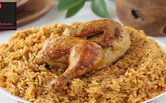

Chicken Madhooth

Chicken Madhooth is a popular Arabian-style dry chicken dish. The chicken is marinated with aromatic spices and cooked until tender, then fried until crispy on the outside. It pairs perfectly with mandi rice or flatbread.
Ingredients
- 1 kg chicken, cut into pieces
- 2 tbsp oil
- 1 onion, sliced
- 1 tbsp ginger paste
- 1 tbsp garlic paste
- 1 tsp black pepper powder
- 1 tsp cumin powder
- 1 tsp coriander powder
- 1/2 tsp turmeric powder
- 1/2 tsp paprika or chilli powder
- Salt to taste
- Fresh coriander for garnish
Directions
-
Marinate the chicken
Combine chicken with ginger paste, garlic paste, spices, and salt. Mix well and rest for 30 minutes.
-
Cook the chicken
Heat oil in a pan and add onions. Sauté until golden, then add the marinated chicken.
-
Dry fry
Cook on medium heat until the chicken releases moisture and becomes dry and slightly crispy.
-
Serve
Garnish with fresh coriander and serve hot with rice or bread.